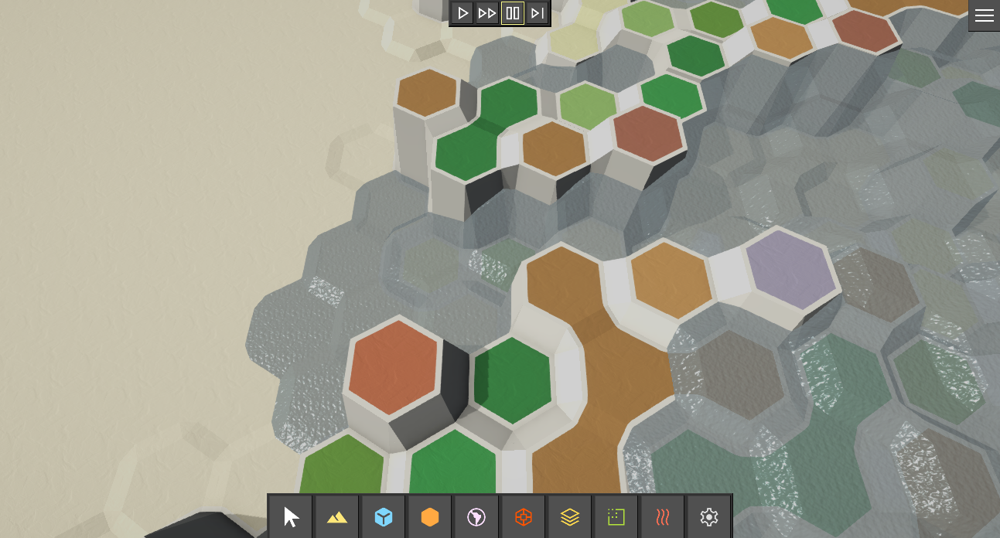

GeoPlast Layers (Data, Simulation, Rendering)

This page documents the GeoPlastLayer base class and all layers that inherit from it, including how GeoPlast layers are created, initialized, updated, simulated, rendered, cleaned up, serialized, and disposed.
It also explains the simulation timing model:
HexTerrainSimulationTimer(global simulation time + throttling)FrameCycleSettings(per-feature simulation cadence, e.g., heat every 8th simulation frame)
1. Class hierarchy
GeoPlast layers form a small inheritance chain:
HexTerrainLayerGeoPlastLayerVisualGeoPlastLayerDynamicGeoPlastLayerMaterialGeoPlastLayer
In short:
GeoPlastLayer= storage + volume/ceiling computation + simulation hooks.VisualGeoPlastLayer= renders layer maps into aChunkMeshLayer(heightmap/transparency).DynamicGeoPlastLayer= volume flow simulation (horizontal + vertical via up/down links).MaterialGeoPlastLayer= heat (heat amount + temperature), heat diffusion, heat advection with volume flow, temperature-driven vertical volume flow, and optional density-by-temperature.
2. Core data model (GeoPlastLayer)
GeoPlastLayer stores per-cell scalar fields (implemented as data layers):
| Concept | Field | Type | Meaning |
|---|---|---|---|
| Plast “mass” | AmountMap |
ColorMapCellValueDataLayer_Float |
Amount of geo plast (unitless “amount”). |
| Density | DensityMap |
ColorMapCellValueDataLayer_Float |
Density factor (volume per amount). |
| Volume | VolumeMap |
ColorMapCellValueDataLayer_Float |
Computed: Amount * Density. |
| Bedrock height | BedrockHeightMap |
CellValueDataLayer<float> |
Base height for this layer (usually copied from bedrock layer’s ceiling). |
| Ceiling height | CeilingHeightMap |
CellValueDataLayer<float> |
Computed: BedrockHeight + Volume. |
Additionally:
GeoPlastSettings(base density + whether a bedrock reference is required)BedrockPlastReference(HexTerrainLayerReference) to anotherGeoPlastLayerthat acts as bedrock source
2.1 “Amount vs Density vs Volume”
GeoPlast uses a common pattern:
- Amount is the conserved-ish “stuff” that moves between cells and layers.
- Density converts that to volume/height for rendering and flow computations.
- Volume is derived:
Volume = clamp(Amount * Density, 0, +inf)(CalculateGeoPlastVolumeJob)
This is important because:
- Flow simulation is computed primarily in volume space (height/volume differences).
- Application of flow typically changes AmountMap (converted back using density).
3. Creation & initialization
3.1 Authoring (Unity scene → ECS buffers)
GeoPlast layers are requested via authoring components:
GeoPlastLayerGroupAuthoringbakes a buffer ofCreateGeoPlastLayerRequestonto the terrain entity.- Each request stores:
NameArgs=GeoPlastLayerConfigAsset(a ScriptableObject factory + init config)
- Each request stores:
Relevant code:
GeoPlastLayerGroupAuthoringcreatesCreateGeoPlastLayerRequestentries.CreateGeoPlastLayerRequestimplementsITerrainLayerFactoryand callsArgs.Value.CreateTerrainLayer().
3.2 Config assets (layer factories + init config)
The package provides config assets matching the inheritance chain:
GeoPlastLayerConfigAsset→ createsGeoPlastLayerVisualGeoPlastLayerConfigAsset→ createsVisualGeoPlastLayerDynamicGeoPlastLayerConfigAsset→ createsDynamicGeoPlastLayerMaterialGeoPlastLayerConfigAsset→ createsMaterialGeoPlastLayer
Each config asset implements the matching init interface:
IInitGeoPlastLayerConfigIVisualGeoPlastLayerConfigIInitDynamicGeoPlastLayerArgsIInitMaterialGeoPlastLayerArgs
These interfaces supply:
- settings structs (GeoPlast / Visual / Dynamic / Material)
- initialization args for maps (amount, density, volume, heat, temperature)
- layer references (bedrock; up/down flow targets; chunk mesh layer target)
3.3 Runtime initialization (Init)
All GeoPlast layers follow this pattern:
Init(HexTerrainSettings settings)allocates/initializes data layers to matchsettings.CellsCount.Init(settings, args)calls baseInit(settings)and thenInitLayerData(args)to apply config and initial map data.
Notable behavior:
- If
GeoPlastSettings.HasBedrock == false,BedrockHeightMapis filled with 0 during init.
4. Update vs Simulation (two pipelines)
GeoPlast has two distinct “pipelines” you typically run every frame:
4.1 Update pipeline (derived maps, recomputed when dirty)
This computes maps that are derived from other maps and uses dirty flags to skip work.
GeoPlastLayerGroup.Update() runs, in order:
PreparePlastUpdate()CalculateDensity()CalculateVolume()CalculateBedrockAndCeiling()DoPlastUpdate()
Base GeoPlastLayer implements:
CalculateVolume()(only ifAmountMaporDensityMapdirty)CalculateBedrock()(copies bedrock ceiling → bedrock height, if enabled and bedrock ceiling dirty)CalculateCeiling()(only if bedrock or volume dirty)
Derived types extend PreparePlastUpdate() / CalculateDensity():
MaterialGeoPlastLayercomputes:TemperatureMap=HeatMap / AmountMap(CalculateGeoPlastTemperatureJob)- density optionally scales by temperature (
CalculateGeoPlastDensityByTemperatureJob)
4.2 Simulation pipeline (behavioral “movement” over time)
Simulation is a 3-stage hook model called by GeoPlastLayerGroup.Simulate(...):
PrepareSimulation(simTime, group, deps)CalculateSimulation(simTime, group, deps)ApplySimulation(simTime, group, deps)
The intent is:
- Prepare: clear/prepare intermediate buffers (flow potentials, flow maps, dirty chunk sets).
- Calculate: compute “what should happen” (potentials + flow maps).
- Apply: apply flow maps to persistent state (amount/heat maps).
GeoPlastLayerGroup also guards against double-simulating the same timer frame:
- It stores
LastSimulationFrameand ignores repeated calls with the samesimulationTime.FrameCount.
5. Simulation timing
5.1 HexTerrainSimulationTimer (global simulation clock)
HexTerrainSimulationTimer is an ECS component containing:
Elapsed(total simulation seconds)DeltaTime(seconds since last simulation frame; used in flow speeds)TimeScaleFrameCount(simulation frame index)SimulationDelay+SimulationDelayCounter(skip simulation frames globally)- fixed timestep controls:
IsFixedTimeStep,FixedTimeStep - pause controls:
IsPaused,IsTickAndPause
Creation
HexTerrainSimulationAuthoring bakes a HexTerrainSimulationTimer component with initial values (time scale, delay, pause flags, fixed step).
Updates (conceptual contract)
This package expects some “timer update” step in your world that:
- stops advancing if
IsPausedis true - advances one tick then pauses when
IsTickAndPauseis set - uses
SimulationDelay/SimulationDelayCounterto skip simulation ticks globally - updates
DeltaTime,Elapsed, and incrementsFrameCounton simulation ticks
The GeoPlast systems consume the result of this contract (especially
DeltaTimeandFrameCount) rather than implementing the timer progression themselves.
5.2 FrameCycleSettings (per-feature cadence)
FrameCycleSettings is used to run a specific simulation feature on only certain simulation frames:
FramesCycleLength: cycle length in simulation framesFramesCycleOffset: which frame inside the cycle is active
A frame is a “tick” for the cycle if:
simulationTime.FrameCount % FramesCycleLength == FramesCycleOffset
Example
If:
FramesCycleLength = 4FramesCycleOffset = 2
Then the feature runs on simulation frames:
- 2, 6, 10, 14, ...
Where it’s used
DynamicGeoPlastSettings.VolumeFlowFrameCyclecontrols volume flow cadenceMaterialGeoPlastSettings.HeatFlowFrameCyclecontrols independent heat diffusion cadence
This means you can run:
- volume flow every 2nd simulation frame
- heat diffusion every 8th simulation frame …while still updating derived maps every frame (if needed) via the update pipeline.
6. Volume flow (Dynamic GeoPlast)
6.1 Data structures: VolumeFlowPotentialMap and VolumeFlowMap
DynamicGeoPlastLayer adds:
VolumeFlowPotentialMap : FlowMapDataLayerVolumeFlowMap : FlowMapDataLayerIncomingVolumeFlowChunks : NativeParallelHashSetDataLayer<int>
FlowMapDataLayer is a CellValueDataLayer<FixedArray8<float>> plus a scalar TotalFlowMap.
FixedArray8<float> slots map to FlowDirections:
- 0..5 = hex neighbors
- 6 = Up
- 7 = Down
Semantics used by jobs:
- Potential maps store “desired” flow capacity per direction.
- Flow maps store actual flow amounts per direction for this tick.
- Total flow maps store sum of all outflow from a cell.
6.2 Simulation gating
Volume flow simulation runs only when both are true:
- some flow direction is enabled (
GeoPlastFlowSettings.IsAnyFlowEnabled) - the current simulation frame matches the configured
FrameCycleSettings
Code path:
DynamicGeoPlastSettings.IsAnyFlowEnabledAndIsSimulationTick(simTimer)
6.3 Prepare stage
DynamicGeoPlastLayer.PrepareSimulation(...) clears:
VolumeFlowPotentialMap+TotalFlowMap→ zerosVolumeFlowMap+TotalFlowMap→ zerosIncomingVolumeFlowChunks→ cleared
This prevents stale flow data from previous simulation ticks.
6.4 Calculate stage (potential → flow map)
The calculation is split:
6.4.1 Horizontal volume flow potential
CalculateHorizontalVolumeFlowPotentialJob computes neighbor potentials using ceiling height differences:
ceiling = bedrock + volumeLeftheightDifference = myCeiling - neighborCeiling- potential is
max(heightDifference, 0), thresholded - it then proportionally distributes and caps potential based on available volume
Important details:
- Potential is computed using
volumeLeft = max(myVolume - alreadyAssignedPotential, 0), so vertical potentials can “consume” available volume too. - The algorithm includes a
* 0.5ffactor when distributing potential share.
6.4.2 Vertical volume flow potential
DynamicGeoPlastLayer base implementation returns no vertical potential.
MaterialGeoPlastLayer overrides this to compute vertical potential based on temperature (see §8.6).
6.4.3 Flow map from potentials
CalculateVolumeFlowMapJob converts potentials to actual per-direction flow:
- Flow speed per direction is
clamp(FlowSpeed * simulationTimer.DeltaTime, 0..1) - It computes an outflow amount per slot (0..7) and a total outflow.
- For horizontal flow (0..5), it marks neighbor chunks in
IncomingFlowChunksso only affected chunks do expensive “incoming sum” work during apply.
6.5 Apply stage (flow map → AmountMap)
Applying volume flow is done in three steps:
Horizontal inflow (
ApplyHorizontalVolumeFlowMapJob)- For a cell, sum inflow from neighbors’ flow maps.
- Convert inflow volume → inflow amount using neighbor density:
flowAmount = flowVolume / neighbourDensity
- Add to
AmountMap.
Vertical transfer to other layers (
ApplyVerticalVolumeFlowMapJob)- Uses
UpFlowTargetLayerRef/DownFlowTargetLayerRefto find the target layer. - For each cell, take
FlowMap[cell][Up|Down], convert to amount via density, and add to target layer’sAmountMap.
- Uses
Subtract outflow from source (
ApplyVolumeFlowFromCellJob)- Uses
TotalFlowMap[cell](total outflow volume) - Converts volume out → amount out via density
AmountMap[cell] -= flownOutVolume / density
- Uses
This separation is why vertical apply jobs only add to targets: the source subtraction is centralized and uses TotalFlowMap.
7. Rendering (Visual GeoPlast)
VisualGeoPlastLayer renders into a ChunkMeshLayer referenced by SurfaceLayerRef.
7.1 Render modes
VisualGeoPlastSettings.RenderMode selects which scalar drives the surface height:
Amount: renderAmountMapdirectlyVolume: renderVolumeMapCeiling: renderCeilingHeightMap(but usesVolumeMapas “amount proxy” for transparency/threshold logic)
7.2 Render job
Rendering is performed by RenderGeoPlastToHeightMapJob:
- reads:
- chosen render values map
- chosen render amount map (for transparency/zero-height thresholding)
- dirty chunk grid of the render values
- writes:
ChunkMeshLayer.HeightMapChunkMeshLayer.TransparencyMap- (biome map is present but currently unused in the job)
Key behaviors:
- If the render-values chunk isn’t dirty, the job skips the cell early.
- Transparency is computed by
renderAmount <= TransparencyTresholdand depends onIsRenderZeroAsTransparent. - “Minimum visible height” is enforced by
ZeroHeightTreshold:- If non-transparent and
0 < renderAmount < ZeroHeightTreshold, the rendered height is increased so that tiny amounts are still visible.
- If non-transparent and
8. Heat and temperature (Material GeoPlast)
MaterialGeoPlastLayer adds heat simulation on top of volume simulation.
8.1 Heat is stored as “heat amount”
HeatMapstores a scalar “heat amount” per cell.- Temperature is derived:
Temperature = Heat / Amount(CalculateGeoPlastTemperatureJob)- If
Amount <= 0, temperature is set to 0.
This design allows:
- heat to move independently (diffusion)
- heat to be advected with moving plast volume
8.2 Heat advection with volume flow (heat flows with volume)
When volume flows, a corresponding “heat flow” is derived from it:
ApplyVolumeFlowMapToHeatFlowMapJob:
- For each direction:
flowShare = flowVolume / myVolumeheatToDirection = myHeat * flowShare
- Accumulates into
HeatFlowMapandTotalHeatFlowMap
This is what makes heat “ride along” with flowing material.
8.3 Independent heat diffusion (heat flows without volume)
Material heat diffusion is a separate simulation feature with its own:
HeatFlowFrameCycleHeatFlowPotentialMapHeatFlowMapIncomingHeatFlowChunks
It uses the same generic CalculateVolumeFlowMapJob, but with HeatMap passed as the “volume” array, meaning:
- the mechanics of potential → flow map → apply are shared,
- but the potentials are computed specifically for heat.
8.4 Horizontal heat diffusion potential
CalculateHorizontalHeatFlowPotentialJob computes potential based on overlapping volume columns between adjacent cells:
- Compute overlap height:
commonBedrock = max(myBedrock, neighborBedrock)commonCeiling = min(myCeiling, neighborCeiling)touchingHeight = commonCeiling - commonBedrock
- If
touchingHeight <= 0, there is no contact → no heat flow. - Otherwise, a touching share is applied to a per-side heat budget.
This models “heat diffuses where volumes touch”.
8.5 Vertical heat flow potential (between layers)
CalculateVerticalHeatFlowPotentialJob computes vertical potential when:
- source has volume and heat
- target has volume (it must be able to “receive” heat in a meaningful way)
It uses a simplified touching model:
touchingVolume = min(myVolume * 0.5, 1)touchingShare = touchingVolume / myVolumepotential = touchingShare * heatLeft
8.6 Temperature-driven vertical volume flow (between layers)
MaterialGeoPlastLayer overrides vertical volume flow potential calculation using:
VerticalFlowByTemperatureSettingsper direction (UpFlowByTemperatureSettings,DownFlowByTemperatureSettings)- an
ExponentialCurveevaluated by cell temperature
CalculateVerticalVolumeFlowPotentialJob:
temperatureFactor = curve.Evaluate(myTemperature)potential = min(BaseFlow * temperatureFactor, volumeLeft)- writes the result into potential slot
Up (6)orDown (7)
This is how you implement “evaporation/condensation” style behavior:
- hot cells produce up-potential
- cold cells produce down-potential …depending on the curve you author.
8.7 Applying heat flow (horizontal + vertical + subtract outflow)
Heat uses the same 3-step application pattern as volume:
ApplyHorizontalHeatFlowMapJobadds incoming heat from neighbors.ApplyVerticalHeatFlowMapJobtransfers heat to linked layers via up/down references.ApplyHeatFlowFromCellJobsubtracts total heat outflow from the source cell.
8.8 When does heat apply?
In MaterialGeoPlastLayer.ApplySimulation(...):
- Heat apply happens if either:
- volume flow is ticking this frame (because advected heat exists), or
- heat flow is ticking this frame (because diffusion is computed)
This ensures heat stays consistent with volume movement even if diffusion runs less frequently.
9. Vertical linking model (Up/Down flow targets)
Vertical movement is organized by explicit layer references:
UpFlowTargetLayerRefandDownFlowTargetLayerRefexist onDynamicGeoPlastLayer- They are configured through:
IInitDynamicGeoPlastLayerArgs.UpFlowTargetLayerReferenceIInitDynamicGeoPlastLayerArgs.DownFlowTargetLayerReference
At runtime, GetVerticalFlowTarget<T>(...) uses GetTerrainLayerFromParent<T> to resolve the target from the parent GeoPlastLayerGroup.
Key constraints:
- For volume vertical flow, the target is resolved as
GeoPlastLayer. - For heat vertical flow, the target is resolved as
MaterialGeoPlastLayer.- If you link to a non-material target, vertical heat diffusion won’t find a target and will no-op.
10. Cleanup, completion, disposal, serialization
10.1 Cleanup
Each layer implements:
Cleanup()(sync)CleanupAsync(JobHandle)(job-scheduled cleanup)
Base GeoPlastLayer.Cleanup() calls cleanup on:
- amount/density/volume maps
- bedrock and ceiling maps
Derived layers extend this to clean flow maps, heat maps, hash sets, etc.
10.2 Completing jobs
CompleteAllJobs() exists to safely get/set values immediately (e.g., for serialization or debug queries).
Each layer completes jobs for its owned maps (including their colormaps where applicable).
10.3 Dispose
Dispose() releases native allocations owned by data layers.
Important: HexTerrainLayer.ParentLayer is not disposed when a child is disposed.
10.4 Serialization
GeoPlastLayer implements ISerializableTerrainLayer and serializes:
AmountMapDensityMap
MaterialGeoPlastLayer extends serialization by serializing:
HeatMap
Derived/computed maps such as:
VolumeMapBedrockHeightMapCeilingHeightMap- flow maps …are expected to be recomputed after load via the update pipeline.
11. How to use (practical setup)
- Add
HexTerrainAuthoringto create the terrain entity. - Add
ChunkMeshLayerGroupAuthoringand define at least oneChunkMeshLayer(surface) used for height rendering. - Add
GeoPlastLayerGroupAuthoringand list your GeoPlast layers:- Choose config asset type based on needed features:
GeoPlastLayerConfigAsset(data only)VisualGeoPlastLayerConfigAsset(rendering)DynamicGeoPlastLayerConfigAsset(volume flow)MaterialGeoPlastLayerConfigAsset(heat + temperature behavior)
- Choose config asset type based on needed features:
- Configure:
BedrockPlastReferenceifGeoPlastSettings.HasBedrockis enabled.ChunkMeshLayerReference(visual layers) to point at the surface mesh layer.UpFlowTargetLayerReference/DownFlowTargetLayerReferencefor vertical links.FrameCycleSettingsfor performance control per feature (volume vs heat).
- Ensure the world updates:
HexTerrainSimulationTimer(advancingFrameCount+DeltaTime)- calls into:
GeoPlastLayerGroup.Update(...)(derived map computations)GeoPlastLayerGroup.Simulate(simTime, ...)(flow/heat behaviors)GeoPlastLayerGroup.Render(...)(visualization)
12. How to extend
12.1 Add a new GeoPlast layer type
Recommended approach:
Create a new layer class deriving the closest base:
- rendering only → derive
VisualGeoPlastLayer - volume behavior → derive
DynamicGeoPlastLayer - heat/material behavior → derive
MaterialGeoPlastLayer
- rendering only → derive
Override hooks with correct stage semantics:
PrepareSimulation(...):- clear intermediate maps / hash sets used by your simulation
CalculateSimulation(...):- compute potentials and flow maps (schedule jobs, mark dirty)
ApplySimulation(...):- apply flow maps into persistent maps (amount/heat/etc)
Follow the existing job safety pattern:
- call
PrepareToRead()/PrepareToWrite() - combine dependencies
AddReadDependency()/AddWriteDependency()- set dirty flags (
SetDirty(true)) on outputs
- call
12.2 Provide an authorable config asset
Create a ScriptableObject config asset that:
- derives from an existing config asset type (for reuse), or
HexTerrainLayerConfigAsset<T> - implements the appropriate init interface
- overrides
CreateTerrainLayer()to construct your derived layer class
This lets CreateGeoPlastLayerRequest instantiate your layer from authoring without custom runtime code.
12.3 Extend flow logic
Common extension points:
- Custom horizontal flow potential (override
CalculateHorizontalVolumeFlowPotential(...)) - Custom vertical flow (override
CalculateVerticalVolumeFlowPotential(...)) - Custom coupling between volume and heat (override
ApplyVolumeFlowMapToHeatFlowMap(...)) - Custom rendering (override
RenderGeoPlast(...)or render into additional chunk mesh maps)
13. Terminology mapping (requested names)
This package uses “maps” directly; conceptually they correspond to:
- VolumeFlowPotential →
DynamicGeoPlastLayer.VolumeFlowPotentialMap - VolumeFlowMap →
DynamicGeoPlastLayer.VolumeFlowMap - HeatFlowPotential →
MaterialGeoPlastLayer.HeatFlowPotentialMap - HeatFlowMap →
MaterialGeoPlastLayer.HeatFlowMap
Each is a FlowMapDataLayer:
- a per-cell
FixedArray8<float>(6 neighbors + up + down) - plus a scalar
TotalFlowMapfor outflow totals.